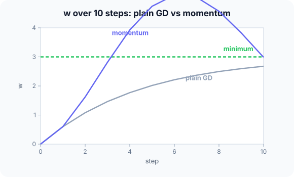

Prerequisites
- Gradient descent (same function and numbers).
- SGD.
- Running (exponentially weighted) averages.
The analogy
Everyday analogy
Roll a heavy ball down a hilly valley. It doesn't stop at every small bump; it builds up speed along the long downhill direction, and its inertia smooths out small left-right wobbles.
Momentum gives gradient descent that inertia: each step is the current gradient plus a fraction of the previous step.
How it works
Update rule: $v \leftarrow \beta v + g$, then $w \leftarrow w - \eta v$, with momentum $\beta$ (often 0.9) and $v$ starting at 0.
Start with two steps by hand
$f(w) = (w - 3)^2$, gradient $2(w - 3)$. Start $w = 0$, $v = 0$, $\eta = 0.1$, $\beta = 0.9$. Predict, then open "Check".
Example: predict before you read
Step 1. Step 1: gradient at 0, new velocity, new $w$.
Check
$g = -6$, $v = 0.9 \cdot 0 - 6 = -6$, $w = 0 + 0.6 = 0.6$.
Step 2. Cover the next line and guess: step 2.
Check
$g = 2(0.6 - 3) = -4.8$, $v = 0.9 \cdot (-6) - 4.8 = -10.2$, $w = 0.6 + 1.02 = 1.62$.
Step 3. Compare with plain gradient descent after 2 steps.
Check
Plain GD: $w = 1.08$. Momentum: $1.62$, much closer to 3, because the velocity accumulated.

Quick recall: Before reading further, cover the text above and say out loud: what does the velocity $v$ remember?
Check your answer
A decaying sum of past gradients: recent ones count most, older ones fade by a factor $\beta$ each step.
Finish the picture: overshooting
Continue the momentum run.
- Step 3. Predict $g$, $v$ and $w$.
Check
$g = 2(1.62 - 3) = -2.76$, $v = 0.9 \cdot (-10.2) - 2.76 = -11.94$, $w = 1.62 + 1.194 = 2.814$.
- Step 4. Predict $w$.
Check
$g = -0.372$, $v = -11.118$, $w \approx 3.93$: it overshoots the minimum, like a ball rolling past the bottom, then the velocity reverses and it settles.
Quick recall: Without scrolling up, say out loud: in a zig-zagging valley, why does momentum help?
Check your answer
Gradients that alternate in sign across the valley cancel in the velocity, while the consistent component along the valley adds up.
Full worked calculation
Six steps of momentum ($\beta = 0.9$, $\eta = 0.1$) on $f(w) = (w - 3)^2$ from $w = 0$, next to plain gradient descent with the same learning rate. The update is $v \leftarrow \beta v + g$, then $w \leftarrow w - \eta v$.
| Step | Gradient $g$ | Velocity $v$ | $w$ (momentum) | $w$ (plain GD) |
|---|---|---|---|---|
| 1 | −6 | −6 | 0.6 | 0.6 |
| 2 | −4.8 | −10.2 | 1.62 | 1.08 |
| 3 | −2.76 | −11.94 | 2.814 | 1.464 |
| 4 | −0.372 | −11.118 | 3.926 | 1.771 |
| 5 | 1.852 | −8.155 | 4.741 | 2.017 |
| 6 | 3.483 | −3.857 | 5.127 | 2.214 |
-
1Step 1: no history yet
$$g = 2(0 - 3) = -6, \quad v = 0.9 \cdot 0 + (-6) = -6, \quad w = 0 - 0.1 \cdot (-6) = 0.6$$With $v$ starting at 0, the first step is identical to plain gradient descent.
-
2Step 2: the velocity builds up
$$g = 2(0.6 - 3) = -4.8, \quad v = 0.9 \cdot (-6) - 4.8 = -10.2, \quad w = 0.6 + 1.02 = 1.62$$90% of the previous velocity is kept and the new gradient is added on top. The step (1.02) is more than twice plain GD's (0.48): consistent gradients accelerate the ball.
-
3Step 3
$$g = 2(1.62 - 3) = -2.76, \quad v = 0.9 \cdot (-10.2) - 2.76 = -11.94, \quad w = 1.62 + 1.194 = 2.814$$The gradient is getting smaller, but the velocity is still growing because the remembered part (−9.18) dominates.
-
4Step 4: overshoot
$$g = 2(2.814 - 3) = -0.372, \quad v = 0.9 \cdot (-11.94) - 0.372 = -11.118, \quad w = 2.814 + 1.112 = 3.926$$Just before the minimum, the gradient is almost 0, but the accumulated velocity carries $w$ right past 3. This is the price of inertia.
-
5Steps 5–6: braking
$$g = 2(3.926 - 3) = +1.852, \quad v = 0.9 \cdot (-11.118) + 1.852 = -8.155, \quad w = 4.741$$The gradient now points back, but it takes a few steps to cancel the momentum. Velocity shrinks (−11.1 → −8.2 → −3.9) and $w$ will turn around and oscillate with decreasing amplitude around 3.
-
6Why it pays off
$$\text{effective step on a constant slope: } \frac{\eta}{1 - \beta} = \frac{0.1}{0.1} = 10\times \eta$$On a long, gentle slope the velocity grows to 10 times the gradient, so momentum moves up to 10 times faster. In a narrow valley, gradients that flip sign cancel out in $v$, damping the zigzag.
What the numbers tell us
After 3 steps momentum reached 2.81 where plain GD was at 1.46, but it overshot to 5.13 before coming back.
Momentum = remember a decaying sum of past gradients. $\beta = 0.9$ is the usual default; it speeds up consistent directions and smooths out noisy ones.
The rule in plain words
Keep a velocity $v$ (start at 0). Each step: $v \leftarrow \beta v + g$ and $w \leftarrow w - \eta v$.
Use $\beta \approx 0.9$. If it overshoots or oscillates, lower $\beta$ or the learning rate.
Quick recall: Before you read the code, describe one momentum step in your own words. Then check below.
Check your answer
Compute the gradient, update the velocity to $\beta$ times the old velocity plus the gradient, then move $w$ by minus the learning rate times the velocity.
The code
Read this code after you have done the two steps by hand. It will make more sense.
double momentum_run(double w, double lr, double beta, int steps) { /* minimise (w - 3)^2 */
double v = 0; /* velocity */
for (int t = 0; t < steps; t++) {
double g = 2 * (w - 3); /* current gradient */
v = beta * v + g; /* accumulate past gradients */
w -= lr * v; /* move with the velocity */
}
return w;
}Definition
What you just did, in one line: momentum is gradient descent with a velocity term: each update is an exponentially decaying sum of past gradients, $v \leftarrow \beta v + g$, $w \leftarrow w - \eta v$.
flowchart LR
G["gradient g at current w"] --> V["v = beta × v + g"]
V --> W["w = w - learning rate × v"]
W --> G
Putting numbers on it
Quick recall: Before looking at the formula, predict: if the gradient stayed constant at $g$ forever, what would the velocity approach?
Check your answer
$g / (1 - \beta)$: with $\beta = 0.9$, ten times the gradient.
Unrolling the velocity shows it is a weighted sum of all past gradients:
$$v_t = g_t + \beta g_{t-1} + \beta^2 g_{t-2} + \dots, \qquad \text{constant } g:\; v \to \frac{g}{1 - \beta} = 10g \text{ for } \beta = 0.9$$| Step | GD $w$ | Momentum $g$ | Momentum $v$ | Momentum $w$ |
|---|---|---|---|---|
| 1 | 0.6 | −6 | −6 | 0.6 |
| 2 | 1.08 | −4.8 | −10.2 | 1.62 |
| 3 | 1.464 | −2.76 | −11.94 | 2.814 |
| 4 | 1.771 | −0.372 | −11.118 | 3.926 |
Warning
Momentum can overshoot the minimum, as in step 4 above, and with too high a $\beta$ or learning rate it can oscillate for a long time. If the loss swings up and down, reduce one of them.
Exam tip
Do a two-column table, plain GD versus momentum, for two or three steps. The key sentence: "the velocity accumulates consistent gradients and cancels oscillating ones".
Common mistakes
- Forgetting to carry $v$ from one step to the next (resetting it to 0).
- Using $\beta$ above 1, which makes the velocity grow without limit.
- Mixing the two common conventions (some write $v \leftarrow \beta v - \eta g$, $w \leftarrow w + v$); both are fine, but not mixed.
Try it yourself
Exercise 1 (warm-up)
With $\beta = 0.5$ instead of 0.9 (same start, $\eta = 0.1$), compute $w$ after two steps.
Hint
Step 1 is the same as before.
Answer
Step 1: $v = -6$, $w = 0.6$. Step 2: $g = -4.8$, $v = -3 - 4.8 = -7.8$, $w = 1.38$.
Exercise 2 (a bit harder)
If the gradient were always $-1$, what would the velocity be after 1, 2 and 3 steps with $\beta = 0.9$, and what does it approach? Write your answer down before you open it.
Show answer
$-1$, $-1.9$, $-2.71$, approaching $-1/(1 - 0.9) = -10$. Momentum effectively multiplies the learning rate by up to 10 along consistent directions.
Did you know?
Did you know?
Boris Polyak introduced the "heavy ball" method in 1964; Nesterov's accelerated variant (1983) looks ahead before computing the gradient and converges faster on convex problems.
Adam's first moment $m$ is momentum in disguise: an exponential average of past gradients.
Key points to remember
If you remember one thing from each line, remember the because.
- Momentum speeds up consistent directions because gradients that agree add up in the velocity.
- It damps oscillations because gradients that alternate in sign cancel in the velocity.
- The velocity can reach $g/(1 - \beta)$ because it sums a geometric series of past gradients.
- It can overshoot because accumulated velocity keeps moving past the minimum.
- $\beta = 0$ is plain gradient descent because then the velocity is just the current gradient.
Self-check questions
Answer these in order, out loud. They follow the page, so your answers become the script of your video.
- How is momentum like a heavy ball rolling down a valley?
Sample answer
It builds up speed in the consistent downhill direction and its inertia smooths out small bumps and wobbles.
- Do two momentum steps on $(w - 3)^2$ from 0 with $\eta = 0.1$, $\beta = 0.9$.
Sample answer
Step 1: $v = -6$, $w = 0.6$. Step 2: $v = -10.2$, $w = 1.62$.
- Why is
vdeclared outside the loop?A good answer says what $v$ must remember.
Sample answer
The velocity must persist between steps to accumulate past gradients; declaring it inside would reset it to 0 every step.
- So what is momentum, in one sentence?
Sample answer
An optimiser that moves along an exponentially decaying sum of past gradients instead of only the current one.
- Why does momentum reduce zig-zagging in a narrow valley?
A good answer separates the two directions.
Sample answer
Across the valley the gradient flips sign each step and cancels in the velocity; along the valley it keeps the same sign and accumulates.
- What does the velocity approach for a constant gradient $g$?
Sample answer
$g/(1 - \beta)$, which is $10g$ for $\beta = 0.9$.
- What is a risk of momentum, and how do you fix it?
Sample answer
Overshooting and oscillation; lower $\beta$ or the learning rate.
- If you had to teach this to a friend in 2 minutes, what would you leave out, and why?
Sample answer
I'd leave out the geometric-series limit and Nesterov. I'd keep the heavy-ball analogy, the two steps reaching 1.62 versus 1.08, and "velocity = decaying sum of gradients".
External resources
- Distill: Why momentum really works: an interactive, visual explanation.
- PyTorch docs: SGD with momentum: the momentum and Nesterov options.
- Stanford CS231n: Parameter updates: momentum and Nesterov in practice.
Videos
- YouTube search: gradient descent with momentum: pick a visual walkthrough.